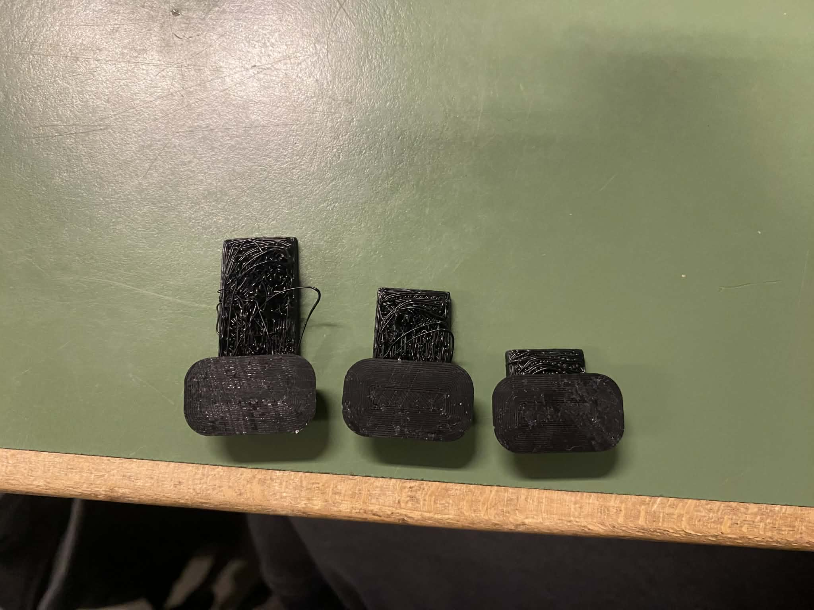

Verkefni 3
3D prentun og 3D skönnun
Fyrstu skref
Eins og kom fram í verkefni 2 ætlaði ég að hafa sama þema fyrir verkefni 2 og 3, vinna í kringum Hot Wheels bíla.
Ég byrjaði því á að gera
það sem ég geri alltaf byrja að horfa á myndbönd frá kennara og skoða svo gömul verkefni frá fyrrum nemendum
þar get ég séð hvernig verkefni þau gerðu og hvernig þau leystu þau.
Hönnun 3d módels
Til að fá hugmyndir um hvað ég myndi 3D prenta fór ég aðeins að skoða á netinu hvað
annað fólk hefur hannað í kringum Hot Wheels bíla. Þar sá ég mjög mikið að áhugaverðum hlutum
eins og til dæmis braut, stykki sem þú ýttir til að
bílarnir fari á sama tíma á stað og festingar sem þú gætir sett á brautina svo þú gætir fest
hana á vegg. Mig langaði eiginlega að gera þetta allt en ég ákvað á endanum að velja að gera braut.
Ég vildi gera krappa beygju sem ég gæti bætt við á brautina mína. Ég gerði beygjuna alveg frá minni eigin hönnun
einu málinn sem ég fylgdi voru stærðir á tungunni sem smelst saman í næsta part af brautinni. Að
teikna beygjuna í Fusion tók frekar stuttan tíma þar sem ég var búinn að læra mikið á það eftir verkefni 2.
Ég gerði nokkrar útgáfur af beygjum en loka niðurstaðan var þessi:
Hönnun brautarinnar er þannig að ekki er hægt að framleiða hana með frádráttarframleiðslu.
Brautin er mjög bogin og innri rásin er þannig staðsett að skurðaverkfæri komast ekki að
henni án þess að rekast á aðra hluta brautarinnar. Þess vegna er erfitt eða ómögulegt að búa
til þessa lögun með hefðbundinni vinnslu eins og fræsingu.
prófanir á 3D prentara
Ég sá strax að það gæti verið pínu erfitt að 3D prenta þesssa braut þar sem það eru engar undirstöður er undir beygjunni
sjálfri. Ég ákvað því að gera test til að sjá getu prentarans. Ég teiknaði litlar beinar brautir mínus
tungur til að sá hvernig það kæmi út fyrir missmunandi lengdir. Hér er teikinginn í Fusion:
Ég 3D prentaði síðan þetta og sá að þetta kom ekki nógu vel út. þar sá ég að þær kæmust ekki mkið lengra án undirstöðu
og hvað þá að taka næstum 90 gráðu beygju.
Hér má sjá prufunar hjá mér:


Eftir að hafa gert prufurnar fór ég að skoða betur hvernig ég gæti 3D-prentað brautina.
Ég skoðaði hvernig fólk á netinu hafði gert svona brautir og sá að sumir notuðu support material.
Ég las líka um mismunandi leiðir til að prenta svona hluti og komst að því að stundum er hægt að
sleppa support ef brautin er annað hvort bein og stutt eða bogin þannig að hún fari upp og svo aftur niður.
Eftir að hafa skoðað þetta vel og prófað að finna mismunandi lausnir komst ég að þeirri niðurstöðu að
ef ég vildi halda minni hönnun þá var í raun enginn annar möguleiki en að nota support material undir beygjunni.
Þegar ég var að gera prufuna lærði ég að nota Prusa Slicer aðallega með hjálp frá
myndbandi
einnig með að fikta, leika mér og nota netið.
3D prentun
Eftir að hafa gert prufu vissi ég hvernig ég ætlaði að 3D prenta. Ég setti beygjuna í Prusa Slicer þar kveikti ég á brim,
hafði 15% innfil og stillti supports á "support on build plate only" samkvæmt því myndi ég nota 38.58g af efni. þá var ekkert
eftir nema Exporta G-kóðanum á lykil og setja
í prentarann. Til að 3D prenta notaði ég Prusa i3 MK3.
Ferlið tók tæpa 5 tíma og koma virkilega vel út
Þegar ég var búinn að prenta brautina gat ég fjarlægt support materialið.
Ég var smá hræddur um að brjóta tunguna af þegar ég var að taka það undan,
en það gekk sem betur fer vel. Að lokum tókst mér að fjarlægja allt supportið
án vandræða og brautin kom vel út. Mynd af brautinni er efst.
3D skönnun
Auðvitað til að klára þemað ákvað ég 3D skanna Hot Wheels bíll. Ég notaði Polycam appið í símanum til
að 3D-skanna bílinn með því að taka myndir af honum úr mismunandi sjónarhornum. Forritið
vinnur síðan úr myndunum með photogrammetry og býr til þrívítt líkan. Ég reyndi mörgum sinnum að fá betri
skönnun en það tókst ekki betur en þetta:
Það geta verið nokkrar ástæður fyrir því að gæðin eru ekki betri,
en ég held að það sé aðallega vegna þess að mér tekst ekki alveg
að fara nógu vel í kringum bílinn með myndavélinni þegar ég er að skanna hann.
Ég hefði líka viljað geta sett skönnunina inn í Fusion til að skoða hana betur,
en þar sem það kostar að exporta skránna ákvað ég að sleppa því.
Yfirlit yfir verkefni
Hlutir sem ég held að ég gæti bætt mig í er að skilja betur notkun á support material og hvenær þarf að nota það.
Ég held að ég hafi líklega ekki þurft svona mikið support material og hefði getað sparað efni með því að setja
það aðeins á staði sem það þurfti. Ég var líka mjög tæpur að gera
beygjuna of litla svo bílarnir kæmust fyrir þannig ef ég væri að gera þetta aftur myndi ég gera stærri braut.
Það sem ég er spenntastur fyrir að sjá með 3D prentuninni er hvort mér hafi tekist að hanna tunguna rétt svo hún passi við alvöru Hot Wheels bílabraut.
Þar sem ég er ekki með slíka braut fyrir sunnan get ég ekki prófað það strax, en ég ætla að prófa það í páskafríinu og uppfæra verkefnið þegar ég hef gert það.
Mér fannst þetta verkefni mjög skemmtilegt og ég lærði mikið. Ég var líka frekar hissa hvað það var auðvelt að 3D prenta
og hef núna mikinn áhuga á að prófa meira. Þá gæti ég fengið betri tilfinningu fyrir því hvernig best er að hanna hluti þannig að þeir henti vel fyrir 3D prentun.
Gagnabanki
Hér er hægt að finna helstu hönnunarskjöl sem ég gerði fyrir verkefnið:
thingiverse